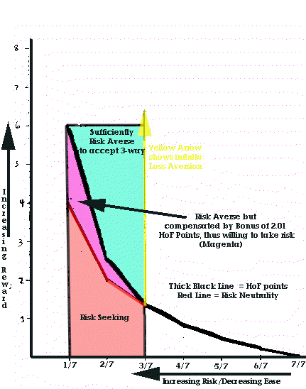
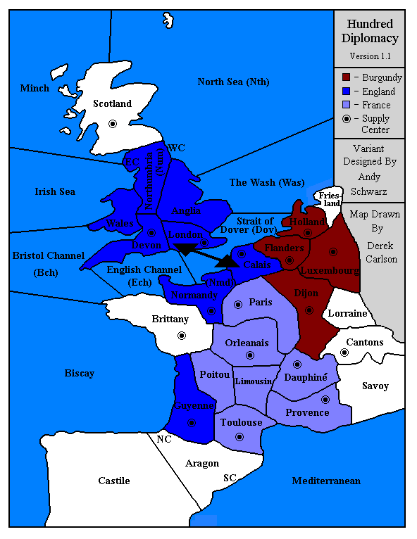
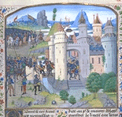

|
HundredA Diplomacy Variant for
Three Players,
|
So, after some experience with a minor press variant called Touch [See the article on this variant in the Winter 1995 Adjustments issue of Diplomatic Pouch] and work getting Avalon Hill's Colonial Diplomacy variant onto the judges, I wanted to make Diplomacy even better. Yes, I had the temerity and gumption to think I could improve on the best game ever made. And in some ways, and with lots of help from others, I think I have. The variant is called Hundred on the judge, it is a three-player game, and you can play it today.
[Note: I will only claim to have made a better version of Diplomacy for three players. In no way do I think hundred is better than Diplomacy, but I do think hundred is a better game than the 3-person game suggested in the Diplomacy rule book.]
A game or two on the judge opened up a new world to me. I knew of the concept of a stop-the-leader alliance; I just never believed that it was worth worrying about. Similarly, I learned early on how common a 3-way draw could be when people had the time to really think out their turns. I also learned about Nick Fitzpatrick's Hall of Fame (HoF) which, for better or worse, came to dominate my own assessment of my skills, and thus took on importance within the strategy for a given game. The three-way draw, already a relatively organic result in many games, was now made fairly desirable because at 1.33 HoF points, it exceeded the 1.0 points a random player in a random game should get over the course of 7 games ending in solo wins. In other words, in my mind, a 3-way draw was the minimum acceptable outcome for me to call myself "above average."
Believe it or not, if one good player starts a game with the strategy of securing a three-way draw first and then seeing if it can be converted into a win, and he/she makes it into the mid-game, it makes it much harder for the other players to avoid a three-way draw without risking their own shot at sharing in at least a small draw. Thus, I found my minimum acceptable result was becoming my most frequent result, and while I still enjoy games that end in 3-ways and still pat myself on the back for exceeding the 1.0 points per game, I began to look at my actions and wonder if I was maximizing my fun/game along with my HoF points/game.
It turns out I probably was maximizing my fun, because I suffer from a grave affliction: Loss Aversion. I cannot bet much with my friends because over some minimum threshold, I feel the pain of losing much more than thrill of winning. In terms of Diplomacy, my loss aversion meant that pocketing a three-way (and the accompanying 1.33 HoF points) had more value to me than the risk of losing it all (2/3 of the time on average if my fellow drawers are as good as I) in order to garner a win and 6 HoF points. Even with the boosted expected value (i.e., 6 HoF points 1/3 of the time yields an average of 2, rather than 1.33, per game), I was not willing to take the risk.
The is not the place and I am not really the person to give a good explanation of the impact of loss aversion on Judge Diplomacy, but I will give a quick effort and leave it at that. Nick Fitzpatrick's Hall of Fame point formula (n-w)/w, where n=# of players and W=# of winners/drawers actually rewards risk taking. If a player of average talent has secured a share of a three-way draw, he/she earns 1.33 points. A risk-neutral player should be willing to trade the guarantee of 1.33 for a 1/3 shot at a solo if the solo is worth 4 points or more (since 4*1/3=1.33). Thus, when Nick awards 6 points for a solo win, he is offering a 2.01 point premium for risk. That means that all those who like risk, all those who are neutral, and even those who are risk averse to some degree will still go for a solo win when faced with a three-way if they feel they have at least a 1-in-3 shot. It is only those players who need more than a 2.01 premium to consider that risk worthwhile (players like me) who are so risk averse as to stay put where they are and pocket the 1.33. The graph below attempts to illustrate this point:
|
 | The thick black line shows the HoF points. The thin red line branching off after the three-way draw illustrates the risk neutral path to a solo win. Players with preferences below the red line actually prefer risk. Those between the red and black lines prefer to avoid risk, but the HoF formula provides enough of a premium to lure them into taking risks. Those above the black line require more of a premium than is offered to take the plunge, and the vertical line coming out of the three way represents infinite aversion to risk, for which no amount of HoF points for a solo will compensate for any risk of losing it all. At least I'm not that bad. |
This was not the only reason Hundred was created. When the real-time Diplomacy (rtdip) movement first began, the logistics were hard enough to arrange that we often fell short of seven players, even with a global pool to draw from. As a result, we experimented with 5 player variants, and I still have plans to develop Ancients based on the Mediterranean, circa 260 B.C., to handle a 5-player environment, but it seemed that rtdippers would appreciate a scaled-down three-player game which could be played very quickly in a tournament style. I tried to find a historical period on which to base a tripartite struggle, much as the seven-power structure of standard Diplomacy came naturally from Diplomacy's being set just before the First World War. The later phases of the Hundred Years' War, in which England, France, and Burgundy struggled for pre-eminence in northwestern Europe, seemed a natural. Rather than being an abstract and symmetrical variant like Chromatic, Hundred is based on a real strategic situation in Europe around 1415-1430 A.D., when the King of England, Henry V, looked poised to become King of France and potentially bring much of what is now France into the English sway. And frankly, I've always been a big fan of the Dukes of Burgundy. Even though they are represented among the "what if" powers of Aberration, I wanted to give the younger branch of the Valois family a real moment of focus and glory.
| Henry V, King 1413-1422 | Henry V was the oldest son of Henry IV. His reign marked a resumption of active hostilities. His successes in the 1410s and 1420s gave England its best shot ever for controlling France. In 1420, two years before his death by dysentery, Henry V was recognized as rightful heir to France by the Charles VI, the French King. | |||
| Philip the Good, Duke 1419-1467 | Philip the Good continued the English alliance of his father John the Fearless until he cut a deal with his cousin Charles VII and abandoned England in the Treaty of Arras (1435). The long rule of Philip the Good represents the overall zenith of Burgundian power | |||
| Charles VII, King 1422-1461 | Charles VII's reign started off poorly, and it was not for many years that he actually captured his own capital, Paris. His reign is famous for the role John of Arc played in the lifting of the siege of Orléans and his coronation at Reims. Returning to the attrition tactics which had served his grandfather, Charles VII avoid battle and eventually outlasted the dwindling English occupation forces. After the Treaty of Arras, in 1435, in which Burgundy became France's ally, Charles went on the offensive. In the 1440s and 1450s, he rapidly expelled the English from Maine, Normandy, and finally Guyenne. All that remained of Lancastrian France was the garrison at Calais. . |
|
 |
West of Paris are the lands most hotly contested between France and England: Normandy, Brittany, and Guyenne. To the south, Toulouse has actually been captured by all three powers, but is generally also contested between France and England. Guyenne is quite removed from the rest of England and so Guyenne vs. Toulouse is often an early and isolated battle, won frequently by the French. Brittany, the key neutral here, has been evenly split between these two powers
Finally, England and Burgundy fight fiercely over Flanders and Calais, as well as Scotland, which has gone primarily to Burgundy, and has twice gone uncaptured. Like Guyenne vs. Toulouse, the Scottish battle takes place somewhat removed from the more intense action in the center of the board. Nonetheless, the victor in these two "side shows" gains an important advantage of strength and position in the larger struggle, and a Burgundian army build in Scotland or a French fleet build in Guyenne can dramatically change the nature of these side shows.
In addition, there is an artificial connection between Calais and London. Any unit in Calais can support any action in/into London, and it can move directly to London itself, as if the provinces were adjacent (and vice versa from London to Calais). Unlike the land bridge between Spain and North Africa in Loeb9, units cross "the Chunnel" at full strength, and unlike the Straits of Messina in Machiavelli, the presence of a fleet in the Strait of Dover has no impact on the land-bridge. In fact, while a hostile F Dov cannot oppose the attack, a friendly fleet in the Strait can support the attack, acting like a double strength convoy/support in one. This was done purely for game balance: I make no claim about the ability of troops to jump from Dover to Calais. By adding the land bridge, France has some hope of reaching London without a massive naval build up, and similarly, a Calais unit can be supported from London, providing England with a stronger beachhead than would otherwise be possible.
| 
|
In an ironic twist, Nick Fitzpatrick has recently agreed to recognize Hundred games for Hall of Fame points. The normal formula, (n-w)/w remains, but n=2.33 instead of 3. As a result, a win in hundred is worth 1.33 HoF points, exactly equal to a 3-way draw in standard games, which seems a nice dovetail of design impetus and result.
While the risk-aversion problem may now have returned, I am not worried. Nick grants 1.33 points for a solo win in hundred and only 0.16 for the yet unseen two-way. Should a player find the HoF point equivalent of a 6-way draw satisfactory, I think it will prove impossible to get them to ever take any risk at all!
To better understand which provinces matter to which powers, Charlie Eldred has compiled some very interesting statistics on province occupation and SC control in Hundred. The core finding is not surprising: Paris and the 5 supply centers surrounding it, as well as neighboring Flanders are the most heavily occupied centers, and Paris itself is the most contested SCs. So the Hundred board, like a standard one, is approximately circular. It has a vital heart and a fluid periphery.
In terms of flow, a few games have ended very quickly (in three game years) with a single power shooting out of the blocks before the others could forge an alliance. Other games have now lasted much longer, with alliance shifting with the balance of power. One game, lancast, started with a quick French burst: 3 builds in the first game year. However, France built all armies and England and Burgundy were able to use their fleet advantage to stalemate France while slowly working the Burgundian navy around through Scotland to the western seas. Before the Burgundian could break into the Mediterranean and end the stalemate, the French player ceded ground and the game resumed a more fluid nature. Recently France has regained 8 SC, and now equipped with some naval power, hopes to break though the re-built Anglo-Burgundian defense line. The game troyes in USIN lasted into its second decade, and the game was never fully stalemated; however, after 11 years, the players decided to call it a fair fight and share a no-winner draw. The lessons of these games are plain: be willing to realign yourself at a moment's notice. In fact, as one player in Hundred has said: "It is impossible to forge long-term alliance or hold long-term grudges in Hundred. If you do, you will lose."
I think new players to Hundred see it as a fun trifle, but the few that have played several games are enjoying learning some of the nuances. Comments from experienced players can guide the new player and also have had some effect on the development of the variant. In addition, as a little experiment, three former winners are squaring off in a Hundred all-star game called lesrois on USIN. It will be interesting to see how three "veterans" approach the game.
Despite lancast being a gunboat game, I have decided to allow Charlie Eldred (Hundred's primary statistician) to blow his cover. He played in troyes and he is playing in lancast. He uses his experience in these games, as well as his study of the board, to tackle the issue of Hundred defense lines in his accompanying article.
Furthermore, Hundred's first game tester, Eric N. Coffey, has written on the early debates on Hundred's most peripheral province: Scotland. Find out how it was almost Jutland, why Eric still thinks it should be, and what changes might be in store for Hundred if we ever do a serious overhaul in Eric's stunning exposé.
I encourage you to try out a game of Hundred. The game is available on USIN and USEF, and will be generally available on all judges who upgrade to Version 8.1 (or higher) of the judge code. If you have trouble finding an open game, email me and I'll match you up with two other players and a GM.
Many kind people have gone out of their way to help make it
easier for people to play Hundred by developing cool maps and mapping utilities.
To them I am grateful. If you use Mapper for Windows, Mapit (for
UNIX or DOS), or would like a blank map, please see my Hundred Variant
Home Page at:
http://haas.berkeley.edu/~schwarz/hundred/design.html to learn how to add Hundred to your repertoire.
In addition, I've accumulated some
very nice links to historical web sites, as well as a condensed history of the real Hundred Years' War. Please see my Hundred Years' War History
Page at:
http://haas.berkeley.edu/~schwarz/hundred/history.htm to learn more
about the real Hundred Years' War. While the quality cannot compare with
the Diplomatic Pouch, you may enjoy the page nonetheless.

|
Andy Schwarz (andyhre@well.com) |
If you wish to e-mail feedback on this article to the author,
click on the letter or envelope above. If that does not work, feel
free to use the "Dear
DP..." mail interface.
{kind=link}
{kind=link}
{kind=link}